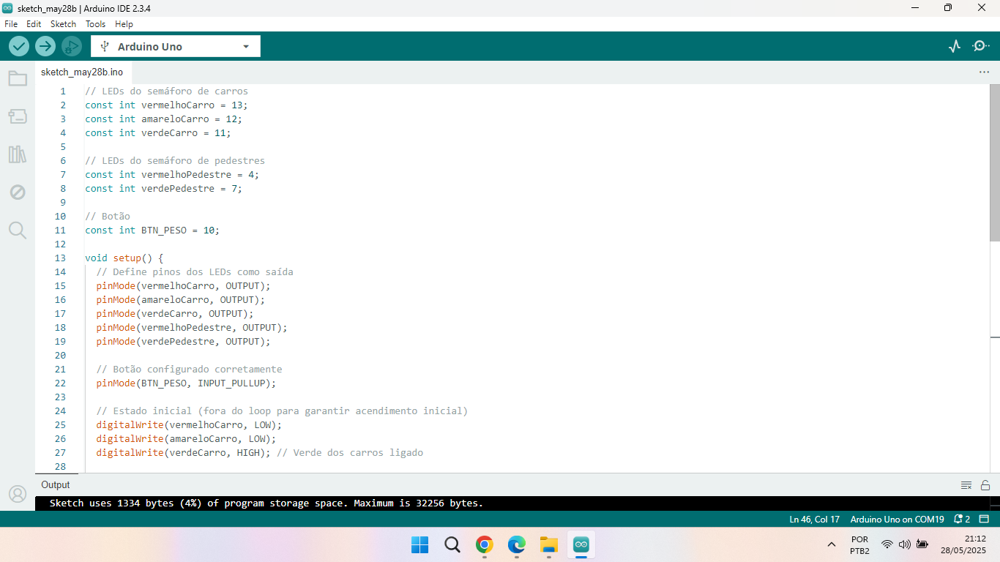
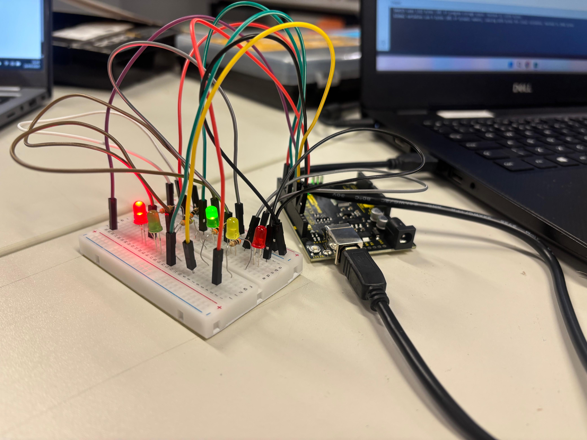

Componentes e Suprimentos
- Arduino UNO R3 - Placa microcontroladora principal do projeto.
- Protoboard - Usada para conectar os componentes eletrônicos sem necessidade de solda.
- LEDs (vermelho, amarelo e verde) – Representam as luzes do semáforo. Cada cor tem sua função no controle de tráfego.
- Resistores de 220Ω – Limitam a corrente que passa pelos LEDs, protegendo-os contra queima.
- Botão (push button) – Ativado pelo pedestre para solicitar a travessia.
- Cabos jumpers – Conectam os pinos do Arduino aos componentes na protoboard.
Aplicativos e Plataformas Utilizados
- Arduino IDE – Para programação e envio do código ao Arduino.
- Tinkercad – Para criação do esquema visual de montagem do circuito.
- GitHub – Hospedagem do código-fonte do projeto.
- Visual Studio Code – Editor utilizado para escrever o site do projeto.
Passo a Passo da Montagem
1️⃣ Preparação da Base
Conecte a protoboard e o Arduino UNO em uma superfície segura. Conecte o cabo USB ao computador.
2️⃣ Inserção dos LEDs
Insira os LEDs na protoboard com resistores de 220Ω em série. Certifique-se da polaridade correta.
3️⃣ Conexão dos LEDs ao Arduino
Conecte os LEDs aos pinos digitais do Arduino com jumpers. Ligue o GND na barra negativa da protoboard.

4️⃣ Instalação do Botão
Insira o botão e ligue-o ao pino digital 10 e ao pino 5V. Um resistor pode ser usado como pull-down.
5️⃣ Upload do Código
Abra a Arduino IDE, conecte a placa e envie o código. Certifique-se de selecionar a porta correta.

6️⃣ Teste do Projeto
Pressione o botão e observe o funcionamento do semáforo. Verifique se os LEDs alternam corretamente.
